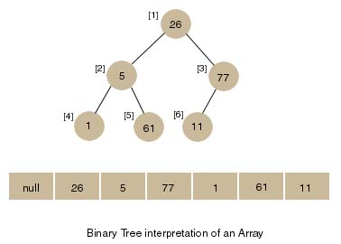
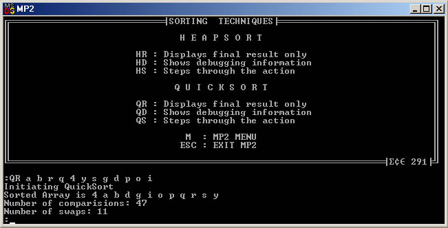

| ECE 291 |
Computer Engineering II |
Polychronopoulos, Spring 2000 |
Machine Problem 2: Sorting Efficiency
| Assigned: |
February 18, 2000 |
| Due Date: |
March 9, 2000 |
| Purpose: |
Subroutines, Recursive algorithms, User I/O. |
| Points: |
50 |
Introduction
In this MP we will investigate two sorting algorithms: The heap sort
and an implementation of the recursive quick sort. We will then track
these sorting algorithms by outputting textual information to the user
so he can verify that not only does our sort finish correctly, it does
so by performing the proper steps.
Imagine looking up a telephone number in an unsorted telephone book.
Without having the data sorted, it would be necessary to scan though all
of the names in the book just to find an individual listing. Searches
and queries for data can be performed far more quickly when the data set
we are searching through is in a known order.
Now imagine having the task of sorting all the names in the telephone
book. Each step of the process involves comparing a pair of names and
determining which name should be listed before the other. In the
algorithms like the heap sort and the quick sort, the running time of
the sort increases proportional to n * log(n), where n is the number of
items being sorted. However, the proportionalities depend on both the
implementation of the algorithm and the data upon which the algorithm is
being performed.
Sorting Algorithms: Heap Sort
The heap sort is a good choice in many situations, as it always performs
in O(n * log(n)) comparisons. It is based on the idea of partially
ordering a binary tree in O(n) comparisons, and then retrieving the top
element n times in an O(log(n)) operation. Thus its best, worst, and
average running times are proportional to n * log(n).
To perform the heapsort, one must first have a representation of the
heap. The most convenient representation for our purposes is that of a
linear array, as shown in Figure 1. This has the advantages of being
able to always find a node's parent and children via simple math
applications on the indices. In our case, for a given node i, its children
are indexed as 2 * i and 2 * i + 1. Note that array[0] is left unused.

The rules of a Heap dictate that a parent must always be of a larger
value than its children. Since our initial array is not guaranteed to
follow this rule, we must first turn the array into a valid heap. To do
this, we follow these pseudocode operations:
for i = heapsize/2 downto 1
PercolateDown(i,heapsize)
end for
|
Then we must iterate through, removing the top element and placing it at
the endmost available position in our list, in the following manner:
for i = heapsize-1 downto 1
; place largest unsorted element in
sorted position
SWAP(Node(1), Node(i+1))
PercolateDown(1,i)
end for
|
These are only valid with the proper PercolateDown function. It is used
to fix a heap with a known abberancy to the rules. In our case, it will
always be a smaller value as a parent to a larger value. To return the
structure to a valid heap, merely compare with its children, swap as
necessary, and follow it down the tree. Note that the heapsize gets smaller
with every iteration. Pseudocode follows:
PercolateDown(k,heapsize)
; heapsize is the current heapsize,
; which changes during the sorting iterations.
while k <= heapsize/2
; we have to also make sure if child2 exists or not
if child1(k) >= child2(k) or (k*2 = heapsize) then
c = k*2
else
c = k*2+1
end if
if node(k) < node(c) then
SWAP(Node(k), Node(c))
k = c
else
break
end if
end while
|
Sorting Algorithms: Quick Sort
We now look at a recursive sorting technique called Quick Sort.
The basic algorithm for an array of integers is as follows:
-
Partitioning Step: Choose an element of the original array
of values (call it the pivot) and determine its final location in
the sorted array. This is done by moving all values which are less than
the pivot to the left side of the array, and all values which are
greater than the pivot to the right side of the array. We now have one
element in its proper location and two unsorted sub arrays.
-
Recursive Step: Perform step 1 on each unsorted array.
Each time step 1 is performed on a sub array, another element is placed
in its final location of the sorted array, and two unsorted sub arrays
are created. When a sub array consists of one element, it must be
sorted, therefore that element is in its final location.
The basic algorithm seems simple enough, but there are two things we
must decide how to do first:
- Choose a Pivot
The choice of a pivot is important. The optimal choice is the element
which is sorted to the middle of the array, as this leads to an n * log(n)
running time. A bad choice for the pivot is an element which is placed
at one end of the array, as that leads to an n2 running time.
See if you can visualize why, or ask a TA.
- Find the final position of the pivot in the array
How do we do this? As an example, consider the following set of values
(the element in bold is the pivot -- it will be placed in its final
position in the sorted array):
| 37 |
2 6
4 89 8 10 12
68 45 |
Starting from the rightmost element of the array, compare each element
to 37 until an element less than 37 is found, then
starting from the left, compare each element to 37 until an element
greater than 37 is found. Make sure the elements you are
comparing do not cross. Then swap both of these elements. The first
element from the right less then 37 is 12, and the first element from the left greater than
37 is 89. Thus 12 and 89 are swapped. The
new array is:
| 37 |
2 6
4 12
8 10 89
68 45 |
Then, repeat this step, starting with the elements inward from those you
just swapped. In this case, the first element less than 37 is
10, and the first element greater than 37
does not occur before your indices cross. Because your indices
crossed, it means your array is partitioned. Now you must insert
37 in its sorted position, and recurse on each of the two
subarrays.
| 2 6
4 12
8 10 |
37 |
89
68 45 |
Now we will examine how to choose the pivot, and recurse into the left
partition of the array.
While finding the median element makes for the best case of QuickSort,
finding the median element takes more comparisons than is desirable.
Similarly, just choosing the first element will cause a sorted list to
take O(n2) comparisons to change nothing - merely verifying
the list is already sorted.
What we will do is take the median of three elements - the first, the
last and the middle (rounded to the front) element. This is a
convenient merging of the ideals in keeping the QuickSort efficient.
Now we will descend into the left partition of the previous array:
The median of 2, 4,
and 10 is 4 so we
use 4 as our pivot.
Comparing from the right, we find 2 as the
first element less than 4. From the left we find 6 as the first element less than 4. But
since our indices crossed, we know that the partitions are sorted, and
we are ready to place 4 in its sorted position, and recurse
again.
Recursing once again we find an array of one element, which is by
definition sorted. Thus the recursion on this side is done.
QuickSort Pseudocode
For this MP, we shall choose the first element as our pivot. Thus, implementation will
require only one step. This is as follows, in pseudocode:
Partition(left,right)
if left < right then
front = left
end = right+1
pivot = value (left)
do
do
front = front + 1
while value (front) < pivot
do
end = end - 1
while value (end) > pivot
if front < end then
SWAP (front, end)
end if
while front < end
SWAP (left, end)
Quicksort (left, end-1)
Quicksort (end+1, right)
end if
|
Problem Description

You must implement the two sorts described above. This will allow you to verify for
yourself the efficiency differences between HeapSort and QuickSort.
The simple quicksort assumes the first element in the list as the pivot. It's biggest downfall
is the case of an already sorted list. This is acceptable for our purposes. Rather than finding
the median of three as your pivot, just perform the comparisons and swaps as described above, but
with the pivot in the first position. When it completes, swap the pivot with the last of the elements
less than or equal to it. Then recurse.
The Procedures
You will implement the following procedures:
TakeInput
Inputs: none
Outputs: input string written to Input, with '$' after last
- CF = 1 if ESC was pressed
input character
Purpose:
Handle user input with calls to KBDIN and DSPOUT. Make sure you
handle the following:
- Backspacing, but only to the beginning of the line.
- Don't overfill the buffer, but make sure to allow Backspacing.
- INPUT_SIZE holds the size of the buffer.
Return when either ESC or RETURN is pressed.
GetArray
Inputs: input string
- BX = offset of first letter (in Input) to be part of the array)
Outputs:
- unsorted array in list
- list_size set to the number of elements
- comparison, swap counters zeroed
Purpose:
Copies the user-input characters into list starting from index 1 and sets
list_size accordingly. Ignore all spaces. The string ends with '$'.
Percolate
Inputs: unsorted array, list_size
- [BP+4] = index of the root of the Heap (assuming a push BP like in the lecture notes)
- [BP+6] = Size of Heap. (assuming a push BP like in the lecture notes)
Outputs: heapified array, number of swaps and comparisons
Purpose:
Performs a percolate down, used both to form a heap, and reheapify
the heap after each element is pulled off.
following the guidelines illustrated in the pseudocode above.
Hints: Children of n are at (2n) and (2n+1)
SortHeap
Inputs: heap array, list_size
Outputs: sorted array, number of swaps and comparisons
Purpose:
First, iterate backwards through your array to perform a BuildHeap operation.
Then iterate through the heap, removing the largest element and placing
at the end of the array, as in the pseudocode above. This results in a
sorted list. Then call Percolate to fix your heap.
QuickSort
Inputs: unsorted array, size
- [BP+4] = index of left side of partition (assuming a push BP like in the lecture notes)
- [BP+6] = index of right side of partition (assuming a push BP like in the lecture notes)
Outputs: sorted array, number of swaps and comparisons
Purpose:
Use the first element as a pivot and perform a quicksort iteration,
recursively calling QuickSort unless the partition is verified as sorted.
Use the method in main for calling QuickSort recursively. When your left index is above or equal
to your right index, QuickSort is done.
Hints: SI and DI are your friends.
PrintList
Inputs: dbug, list and list_size
Outputs: Space separated printout of list values
Purpose:
Provide user feedback by showing the current state of the list if
dbug is non-zero. Wait for user input if dbug = 2.
Called from Swap Macro.
Hints & Observations
-
Remember when performing SortHeap that the size of the heap shrinks by
one, every iteration. Correspondingly, the largest remaining element is
placed one position earlier every iteration.
-
Use shifts instead of MUL and DIV when appropriate.
-
The array is being indexed starting with one. This means we are wasting an array location at
the beginning and the heap has children of Node n at Nodes (2n) and (2n+1).. Don't forget this
if you are using any library functions.
Macros
Purpose:
Macros lead to more understandable and often more efficient code.
Use macros for the following operations:
- Compare:
- Increment Comparison count variable
- If printing debugging information, output "Comparing a b"
- Return comparison flags
- Swap:
- Increment Swap count variable
- If printing debugging information, output "Swapping a b, and call PrintList"
- Swap the actual locations
- Note: you have to make sure that your macro will handle any way
that it is called. As you control these, it shouldn't be a problem.
Scoring
Points will be awarded for completion of each of these subroutines.
Your subroutines must perform all the functions of the library routines,
and must be interchangeable with them in order to receive full credit.
Macros must be used, but are not explicitly given a point value.
The point values for each subroutine are listed below:
TakeInput: 8 pts
GetArray: 6 pts
Percolate: 9 pts
SortHeap: 8 pts
QuickSort: 9 pts
Compare Macro: 4 pts
Swap Macro: 4 pts
PrintList: 2pts
Gold Star
You can earn a gold star for programming excellence on this MP! It's
not worth any additional points, but it's a chance to show off your programming
skills to the TAs. To earn a gold star, you need to implement the Introsort
algorithm as described by David R. Musser in his paper
Introspective Sorting and Selection Algorithms.
Introsort is similar to Quicksort:
it has an equally simple inner loop, and is as fast as quicksort for almost all input sequences;
it is never more than a few percent slower. Introsort, however, has the property that its
complexity is always O(N log N). Unlike quicksort, introsort is suitable for applications
where it is important to have a guaranteed upper bound on complexity.
We're very much looking forward to seeing your implementation!
Preliminary Procedure
-
Copy the empty MP2 program (MP2.ASM), libraries (libmp2.lib, lib291.lib),
and Makefile from the network drive to your home directory with the following
command:
xcopy /s V:\ece291\mp2 W:\mp2
or download the same files from the web as mp2.zip.
-
As with the other MP's, run NMake to build an executable program using
the given MP2 library functions.
-
To receive full credit for the assignment, you need to implement each of
the subroutines described above with your own code. As given, the
MP2.ASM file will run the library versions of those subroutines
-
As with the other MP's, use CodeView to debug your program
Final Steps
-
Demonstrate MP2.EXE to a TA or to the instructor. You will then be
asked to recompile and demonstrate MP2 with different inputs, as well as
perform a comparison of the outputs of the test cases.
Your program must work for all different values of these
variables. Once approved, you are ready to turn in your program.
-
Be prepared to answer questions about any aspect of the operation of your
program. The TA's will not accept an MP if you cannot fully explain
the operation of your code.
-
Copy you programs to the handin floppy: A:\HANDIN YourNetID
- Print MP2.ASM. Use GreenPrint to save paper.
MP2.ASM (Program framework)